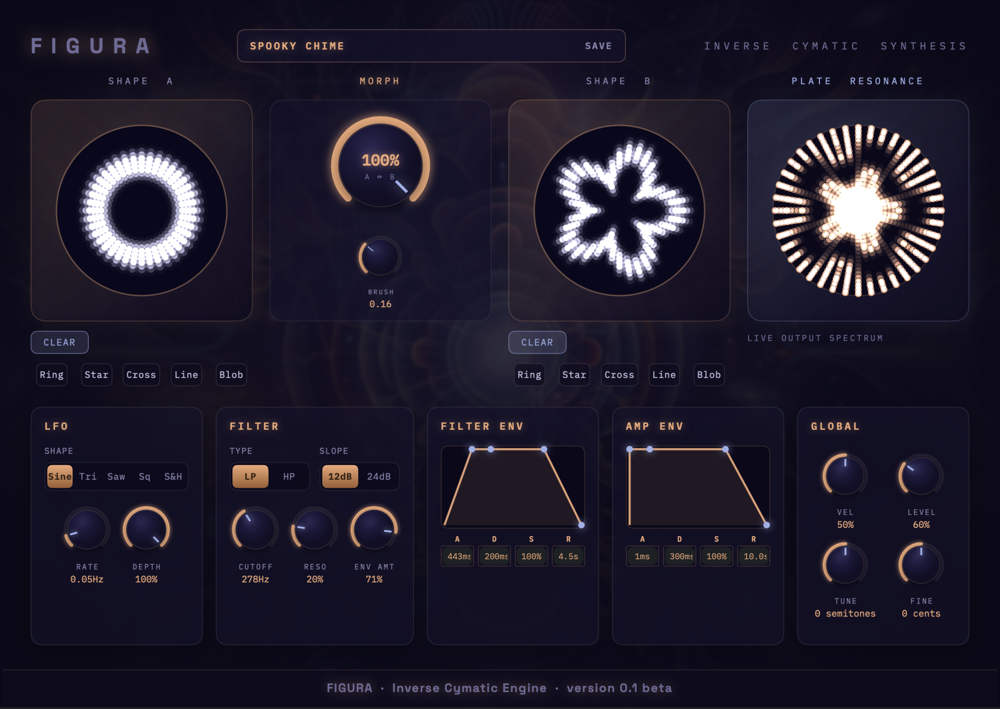

FIGURA
Inverse Cymatic Synthesis
User Manual · v0.1 beta
Figura is an 8-voice polyphonic Inverse Cymatic Synthesiser, an Audio Unit (AUv3) instrument that generates sound from shape, not waveforms. You draw a pattern onto a circular pad, and Figura works out what vibration of a real physical membrane, the same math that governs a drumhead, would produce exactly that pattern. That vibration is the sound: its resonant modes become the synth's oscillator bank.
Two independent shapes (Shape A and Shape B) can be drawn, and a Morph control, with its own LFO, blends continuously between them, so the timbre itself moves as you draw, automate, or modulate.
Figura ships as a small container app that installs an Audio Unit plugin system-wide.
/Applications folder and open it once. This registers the plugin with
macOS. You don't need to keep the app open afterwards, and you don't need to use it
directly.The main window is organized around the two drawing pads, the Morph control between them, and a live view of the resulting resonance, with all the sound-shaping controls below.

Two identical drawing pads. Click or tap and drag inside the circle to paint a pattern. Brush strength is additive, so going over the same spot again makes it stronger. Each pad has:
The central Morph knob blends the synth's sound continuously from 100% Shape A to 100% Shape B. Brush sets how large a mark your next stroke makes on either pad.
The right-hand display is a genuine rendering of the vibration your current shape/morph position produces, brighter near the still points (nodes), darker at the points of maximum motion (antinodes), updating live as you draw, morph, or play.
The bordered box at the top center always shows the name of the currently loaded preset. Click it to open the Preset Manager; click Save beside it to save your current sound as a new preset. See Presets below for the full picture.
Because the whole synth is built on projecting shape onto physical resonance, small changes in where you draw can produce very different-sounding results, more so than most synths' oscillator shapes. A few properties worth knowing:
Every control below is a standard automatable Audio Unit parameter. Automate, MIDI-map, or modulate any of them from your host exactly as you would any other instrument plugin.
| Parameter | Range | Default | What it does |
|---|---|---|---|
| Shape | Sine / Triangle / Saw / Square / S&H | Sine | Waveform driving the modulation. |
| Rate | 0.02 – 28 Hz | 0.5 Hz | Speed of the modulation, log-scaled for fine control at low rates. |
| Depth | 0 – 100% | 0% | How far the LFO swings the Morph position around wherever the Morph knob is currently set. |
| Parameter | Range | Default | What it does |
|---|---|---|---|
| Type | Lowpass / Highpass | Lowpass | Filter character. |
| Slope | 2-pole (12 dB/oct) / 4-pole (24 dB/oct) | 2-pole | How steeply the filter cuts. |
| Cutoff | 20 Hz – 20 kHz | 8 kHz | Filter frequency, log-scaled. |
| Resonance | 0 – 100% | 20% | Emphasis at the cutoff frequency. |
| Env Amount | -100 – +100% | 0% | How much, and in which direction, the Filter Envelope pushes the cutoff. |
| Parameter | Range | Amp default | Filter default |
|---|---|---|---|
| Attack | 1 – 5000 ms | 10 ms | 10 ms |
| Decay | 1 – 5000 ms | 300 ms | 200 ms |
| Sustain | 0 – 100% | 70% | 50% |
| Release | 1 – 10000 ms | 500 ms | 400 ms |
The Amp Envelope shapes overall loudness; the Filter Envelope (combined with Filter Env Amount above) shapes cutoff movement. Useful for plucks, swells, and evolving textures. Both respect your host's sustain pedal.
| Parameter | Range | Default | What it does |
|---|---|---|---|
| Tune | ±24 semitones | 0 | Coarse transpose. |
| Fine Detune | ±50 cents | 0 | Fine tuning. |
| Velocity Sensitivity | 0 – 100% | 50% | How much MIDI velocity affects note loudness. |
| Output Level | 0 – 200% | 80% | Overall output gain. |
Click the preset name at the top of the window to open the full-screen Preset Manager: Figura's own preset browser, organized into banks.
Factory is read-only and ships with 11 presets: Init, Ring, Star, Cross, Line, Blob, plus five hand-designed extras. Frantic Filtered Ring to Star, Hover Car Racer, Mystic Flutter, Slow Morphing Ring to Star, and Spooky Chime. User is where anything you save lands by default, and you can create as many additional banks as you like to organize your own patches, with New Bank / Rename Bank / Delete Bank controls right in the manager.
Single-click a preset to load and audition it. Double-click to load it and close the manager in one action.
Overwrites the currently selected User/custom-bank preset in place with your current sound. The fast way to update a patch you're iterating on.
Prompts for a name and saves your current sound as a brand-new preset. This is also what the Save button next to the preset name in the main window does, jumping straight to the User bank so you can name and store it in one step.
Figura's presets are plain .aupreset files, the same format Logic and
Ableton use natively. So they're fully interchangeable:
.aupreset file in as a new User preset..aupreset files as a new
bank..aupreset extension are recognized as valid preset files.Figura is currently beta software, distributed to testers under a Beta Testing Agreement covering warranty, liability, confidentiality, and use of feedback.
What information Figura's beta program collects, how it's used, and your rights regarding it.
Figura is currently in beta. Join the TestFlight programme for early access and a direct line to shape how it develops.
Join the Beta Test